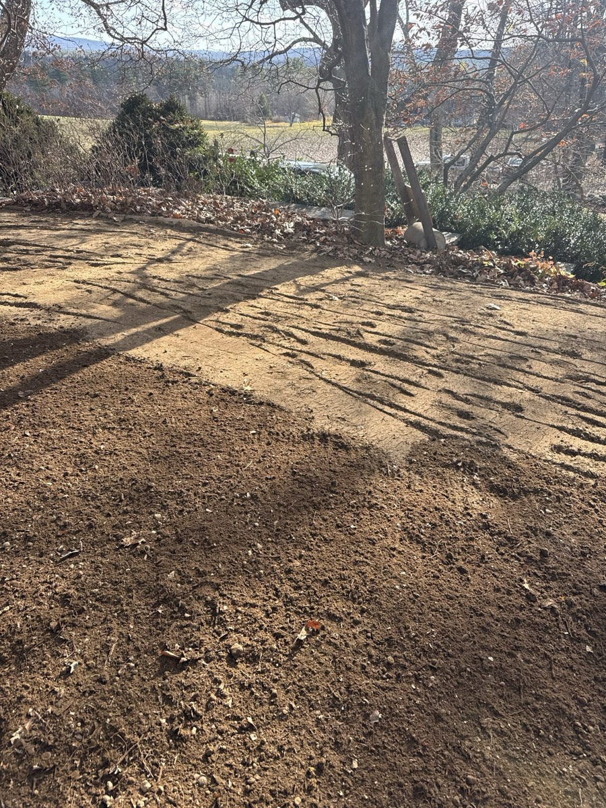

Leveling the lawn for seed. Strong wind, a little cold in it. A race and a calm at the same time.

1. Hear it
2. The poem: Dormant Seed
1The wind comes up the valley and it does not knock. 2It hits the hill and hits the hedge and hits me, 3throws the oak leaves back across the ground I raked, 4drags the maple's shadow left and right and left 5like something late, like something chasing something, 6pulls the dust off every ridge the tines left standing 7and runs it out across the road and gone.
8I lean the rake against the tree.
9The bed is flat. 10The light lies long on it. 11The seed goes in the cold and waits 12the way the cold waits, all the way to April, 13and nothing out here has to hurry but the air.
Bold = the racing tools (stacked verbs, chained "and"). Underlined = long, slow vowels. Line 8 is the hinge.
3. The tools
Run over the line end. Lines 1 to 7 are one long push; only line 1 and line 7 end in a period. The ear has nowhere to rest.
Stack the verbs. Hits, throws, drags, pulls, runs. Every verb is a shove. No "is", no "seems".
Chain with "and". The hill and the hedge and me. Each "and" is another gust that doesn't let up. (The name for this is polysyndeton.)
One plain action as the hinge. Line 8 stands alone. The body stops, so the poem stops.
Flip every tool for the calm. Short sentences that end in periods. Long vowels you can't say fast: lies, long, cold, waits. Few verbs, quiet ones.
Give the speed away at the end. The last line hands the hurry to the air, so the poem ends still.
4. Common mistake
Saying the feeling instead of building it. "I felt a racing energy and a calm" tells it. Long run-on lines against short stopped ones make the reader feel it in their breath.
5. Try it (15 minutes)
Pick one thing moving today (wind, traffic, a dog, your own thoughts). Write it as one sentence that won't stop, 5 to 7 lines, at least four strong verbs, at least three "and"s.
Write one plain thing your body does, on its own line.
Pick one thing that is still. Write it in sentences of five words or fewer, each ending in a period. Lean on long vowels.
End with a line that hands the speed to something else.
6. Check your draft
The fast part has almost no periods.
No "is", "was" or "seems" in the fast part.
The hinge line is a real, ordinary action.
The calm part has at least three full stops.
Nowhere does it say "fast", "racing", "calm" or "peace".
Keep this: let the line breaks and the periods set the speed, not the words.